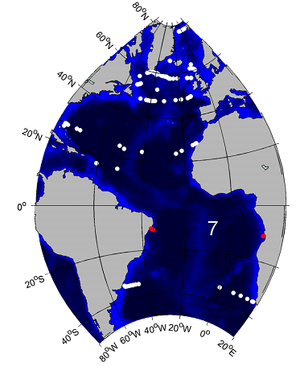
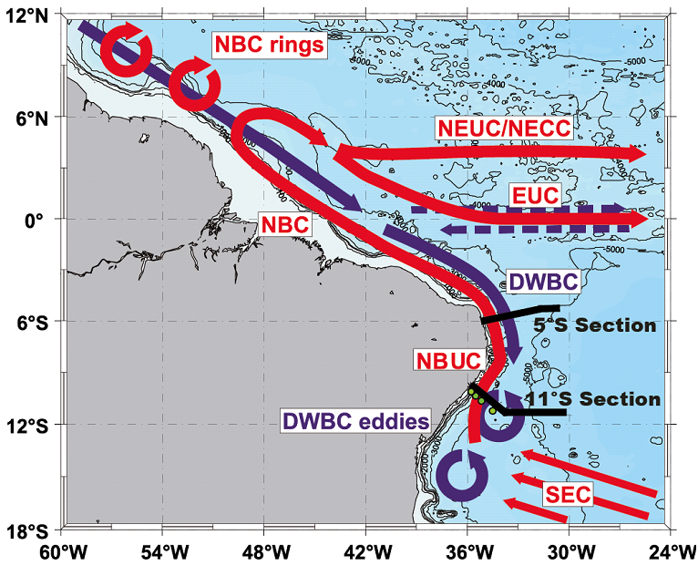
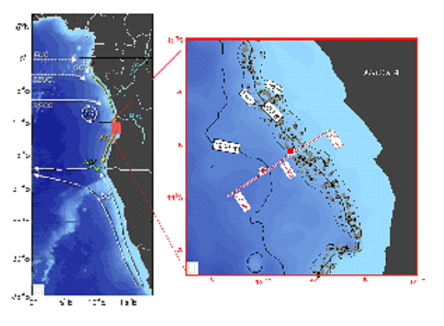
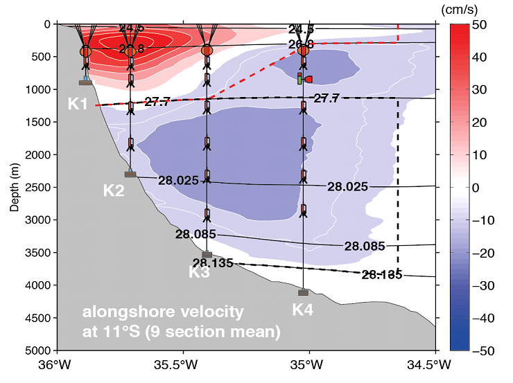
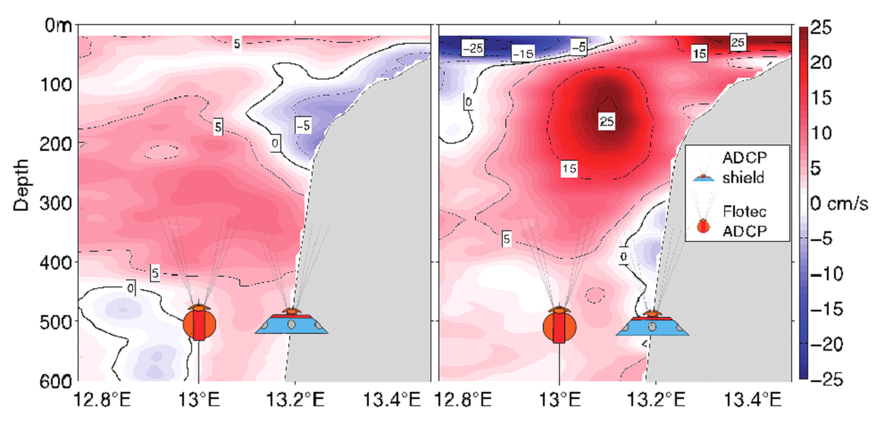
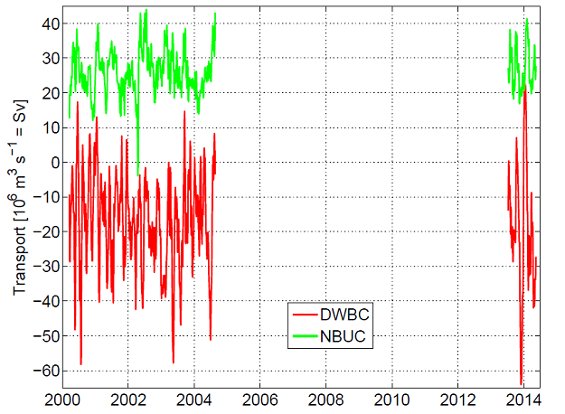
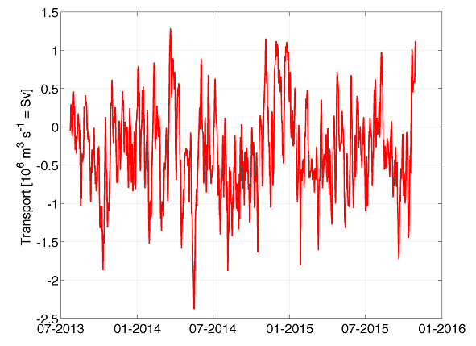

| |||||||||||||||||||
|
2. GSR Greenland Scotland Ridge 3. OSNAP Overturning in the Subpolar North Atlantic Program 4. NOAC North Atlantic Changes 6. MOVE Meridional Overturning Variability Experiment 8. SAMBA-SAMOC South Atlantic Meridional Overturning Circulation
|
11°S
Scientific rationale for the TMA:The transport mooring array at 11°S at the western boundary off Brazil captures the northward flow of warm and intermediate waters within the North Brazil Under Current (NBUC),
the northward flow of Antarctic Bottom Water and the southward flow of North Atlantic Deep Water (NADW) within the Deep Western Boundary current (DWBC).
The work is based on shipboard hydrographic and current observations along two zonal sections at about 5°S and 11°S as well as an array of four tall
moorings on the Brazilian shelf at 11°S recording velocity with four ADCPs and additional current meters (see Fig.) as well as temperature and salinity
with MicroCat sensors. The transport variability of the different branches of the western boundary current system especially the NBUC and DWBC on seasonal
to decadal time scales is analyzed with respect to changes of the Atlantic meridional overturning circulation (AMOC) and/or the subtropical cell (STC).
a)
 c) 
b)
 d)  Figure 1: (a) Sketch of the circulation in the western tropical Atlantic. Schematic representation of mean currents and eddy generation at the western boundary with warm water pathways in red and cold, deep pathways in blue. Black bar and dotted black line at 11°S indicate positions of the measurement program. Current branches indicated are the south equatorial current (SEC), the north Brazil current (NBC), the north Brazil undercurrent (NBUC), the equatorial undercurrent (EUC), the north equatorial undercurrent (NEUC) merged with the north equatorial counter current (NECC) and the DWBC with alternating zonal flows marked at the Equator. Depth contours are also shown (from Dengler et al. 2004). (b) Mooring locations across the shelf with mean alongshore velocity from the 9 shipboard sections. The dashed boxes indicate cross-sections for transport calculations of the north Brazil undercurrent (NBUC) in red and of the deep western Boundary Current (DWBC) in black (update from Hummels et al. 2015). (c) Sketch of the circulation in the eastern tropical Atlantic. Schematic representation of the mean current branches indicating the EUC, the south equatorial undercurrent (SEUC), the south equatorial countercurrent (SECC), the Angola Current (AC) in orange and the Benguela Current (BC). Also indicated is the Angola Benguela Frontal Zone (ABF) in green. The red box is shown as a zoom on the right, where the positions of the moorings are indicated (red square and star). (d) Locations of the ADCP moorings with two snapshots of the alongshore velocity (July 2013 on the left and November 2015 on the right) indicating the high variability of the eastern boundary current system at 11°S, the Angola Current. Data products: volume transport time seriesa) b)Fig. 2: Time series of volume transport at 11°S. a) The two phases of observations at the western side with NBUC showing the North Brazil Undercurrent, and DWBC showing the Deep Western Boundary Current. b) The eastern boundary current at 11°S, the Angola Current, with the observations starting in 2013. Transport data in NetCDF can be downloaded here:
| ||||||||||||||||||
| Observation Period | 2000 - 2004, 2013 - ongoing |
| Observed quantities | Temperature, salinity, velocity |
| Current funding source / end of funding | BMBF RACE II / 2018 |
Eastern boundary
| Observation Period | 2013 – ongoing |
| Observed quantities | Velocity |
| Current funding source / end of funding | BMBF SACUS/PREFACE / 2018 |
Publications
Dengler, M., F. Schott, C. Eden, P. Brandt, J. Fischer, and R. Zantopp (2004), Break-up of the Atlantic deep western boundary current at 8°S. Nature, 432, 1018-1020.
Herrford, J., P. Brandt, and W. Zenk (2017) Property changes of deep and bottom waters in the Western Tropical Atlantic, Deep Sea Research Part I: Oceanographic Research Papers, 124, 103-125.
Hummels, R., P. Brandt, M. Dengler, J. Fischer, M. Araujo, D. Veleda and J. V. Durgadoo (2015) Interannual to decadal changes in the western boundary circulation in the Atlantic at 11°S, Geophys. Res. Lett., 42, 18, 7615-7622, doi:10.1002/2015GL065254.
Kopte, R., P. Brandt, M. Dengler, P.C.M. Tchipalanga, M. Macuéria, M. Ostrowski (2017) The Angola Current: Flow and hydrographic characteristics as observed at 11°S, J. Geophys. Res., 122, 2, 1177-1189, doi:10.1002/2016JC012374.
Kopte, R., P. Brandt, M. Claus, R. J. Greatbatch, and M. Dengler (2017) Role of Equatorial Basin-Mode Resonance for the Seasonal Variability of the Angola Current at 11°S, J. Phys. Oceanogr., resubmitted Sep. 20, 2017.
Schott, F., Brandt, P., Hamann, M., Fischer, J. und Stramma, L. (2002) On the boundary flow off Brazil at 5-10°S and its conncetion to the interior tropical Atlantic. Geophysical Research Letters, 29 (17). DOI 10.1029/2002GL014786.
Schott, F., M. Dengler, R. J. Zantopp, L. Stramma, J. Fischer and P. Brandt (2005), The shallow and deep western boundary circulation of the South Atlantic at 5°-11°S, J. Phys. Oceanogr., 35, 2031-2053.